<!DOCTYPE html>
<html lang="en">
  <head>
    <meta charset="utf-8" />
    <meta name="viewport" content="width=device-width, initial-scale=1.0, maximum-scale=1.0, user-scalable=no" />

    <title></title>
    <link rel="stylesheet" href="../include/dist/reveal.css" />
    <link rel="stylesheet" href="../include/dist/theme/white.css" id="theme" />
    <link rel="stylesheet" href="../include/css/vs2015.css" />
	<link rel="stylesheet" href="../include/css/layout.css" />
	<link rel="stylesheet" href="../include/plugin/customcontrols/style.css">
	<link rel="stylesheet" href="../include/plugin/chalkboard/style.css">


    <script defer src="../include/dist/fontawesome/all.min.js"></script>

	<script type="text/javascript">
		var forgetPop = true;
		function onPopState(event) {
			if(forgetPop){
				forgetPop = false;
			} else {
				parent.postMessage(event.target.location.href, "app://obsidian.md");
			}
        }
		window.onpopstate = onPopState;
		window.onmessage = event => {
			if(event.data == "reload"){
				window.document.location.reload();
			}
			forgetPop = true;
		}

		function fitElements(){
			const itemsToFit = document.getElementsByClassName('fitText');
			for (const item in itemsToFit) {
				if (Object.hasOwnProperty.call(itemsToFit, item)) {
					var element = itemsToFit[item];
					fitElement(element,1, 1000);
					element.classList.remove('fitText');
				}
			}
		}

		function fitElement(element, start, end){

			let size = (end + start) / 2;
			element.style.fontSize = `${size}px`;

			if(Math.abs(start - end) < 1){
				while(element.scrollHeight > element.offsetHeight){
					size--;
					element.style.fontSize = `${size}px`;
				}
				return;
			}

			if(element.scrollHeight > element.offsetHeight){
				fitElement(element, start, size);
			} else {
				fitElement(element, size, end);
			}		
		}


		document.onreadystatechange = () => {
			fitElements();
			if (document.readyState === 'complete') {
				if (window.location.href.indexOf("?export") != -1){
					parent.postMessage(event.target.location.href, "app://obsidian.md");
				}
				if (window.location.href.indexOf("print-pdf") != -1){
					let stateCheck = setInterval(() => {
						clearInterval(stateCheck);
						window.print();
					}, 250);
				}
			}
	};

    var programme9 = ``;
	var programme8 = `#include <cmath>

#include "segment.h"

Segment::Segment() { }

Segment::~Segment() { }

Point Segment::getA()
{
    return *a;
}

Point Segment::getB()
{
    return *b;
}

void Segment::setA(Point A)
{
    a = &A;
}

void Segment::setB(Point B)
{
    b = &B;
}

float Segment::getLongueur()
{
    return sqrt((a->getX() - b->getX()) * (a->getX() - b->getX())
                + (a->getY() - b->getY()) * (a->getY() - b->getY()));
}`;
	var programme7 = `#include "point.h"

class Segment
{
    Point* a;
    Point* b;

public:
    Segment();
    ~Segment();

    Point getA();
    Point getB();

    void setA(Point A);
    void setB(Point B);

    float getLongueur();
};`;
	var programme6 = `Point Segment::getA()
{
    return a;
}

Point Segment::getB()
{
    return b;
}

void Segment::setA(Point A)
{
    a = A;
}

void Segment::setB(Point B)
{
    b = B;
}

float Segment::getLongueur()
{
    return sqrt((a.getX() - b.getX()) * (a.getX() - b.getX())
                + (a.getY() - b.getY()) * (a.getY() - b.getY()));
}`;
    var programme5 = `class Segment
{
    Point a;
    Point b;

public:
    Segment();
    ~Segment();

    Point getA();
    Point getB();

    void setA(Point A);
    void setB(Point B);

    float getLongueur();
};

Segment::Segment() { }

Segment::~Segment() { }`;
	var programme4 = `int main()
{
    Point pt;
    pt.setX(1.2);
    pt.setY(-4.7);

    cout << "Coordonnées (x, y) du point : (" << pt.getX() << ", " << pt.getY() << ")";

    return 0;
}`;
	var programme3 = `float Point::getX()
{
    return x;
}

float Point::getY()
{
    return y;
}

void Point::setX(float X)
{
    x = X;
}

void Point::setY(float Y)
{
    y = Y;
}`;
    var programme2 = `class Point
{
    float x;
    float y;

public:
    Point();
    ~Point();

    float getX();
    float getY();

    void setX(float X);
    void setY(float Y);
};`;
    var programme1 = `#include <iostream>
using namespace std;

class Point
{
public:
    Point();
    ~Point();

    float x;
    float y;
};

Point::Point()
{
    cout << "Objet construit" << endl;
}

Point::~Point()
{
    cout << "Objet détruit" << endl;
}

int main()
{
    Point pt;
    pt.x = 1.2;
    pt.y = -4.7;

    return 0;
}`;

        </script>
  </head>
  <body>
    <div class="reveal">
      <div class="slides"><section  data-markdown><script type="text/template"><!-- .slide: class="drop" -->
<div class="" style="position: absolute; left: 0px; top: 0px; height: 700px; width: 960px; min-height: 700px; display: flex; flex-direction: column; align-items: center; justify-content: center" absolute="true">

<style> .reveal {  font-size: 180%; line-height: 170%; } .reveal p {font-size:80%;} .reveal code {font-size:120%}</style>
# Séance 5
## Classes
</div></script></section><section  data-markdown><script type="text/template"><!-- .slide: class="drop" -->
<div class="" style="position: absolute; left: 0px; top: 0px; height: 700px; width: 960px; min-height: 700px; display: flex; flex-direction: column; align-items: center; justify-content: center" absolute="true">

## La dernière fois...

- &shy;<!-- .element: class="fragment" data-fragment-index="1" --> Les fonctions à valeur de retour
- &shy;<!-- .element: class="fragment" data-fragment-index="3" --> Les fonctions void
- &shy;<!-- .element: class="fragment" data-fragment-index="4" --> Les paramètres par défaut

</div></script></section><section  data-markdown><script type="text/template"><!-- .slide: class="drop" -->
<div class="" style="position: absolute; left: 0px; top: 0px; height: 700px; width: 960px; min-height: 700px; display: flex; flex-direction: column; align-items: center; justify-content: center" absolute="true">

# Les classes

</div></script></section><section  data-markdown><script type="text/template"><!-- .slide: class="drop" -->
<div class="" style="position: absolute; left: 0px; top: 0px; height: 700px; width: 960px; min-height: 700px; display: flex; flex-direction: column; align-items: center; justify-content: center" absolute="true">

## Les classes
- &shy;<!-- .element: class="fragment" data-fragment-index="1" --> Rassembler des variables (**attributs**) et des fonctions (**méthodes**) ayant un sens commun
	- &shy;<!-- .element: class="fragment" data-fragment-index="2" --> Créer de nouveaux types de variables

&shy;<!-- .element: class="fragment" data-fragment-index="3" --> Une classe sert à créer un **objet** pouvant prendre plusieurs formes (les « valeurs possibles » de l'objet)

</div></script></section><section  data-markdown><script type="text/template"><!-- .slide: class="drop" -->
<div class="" style="position: absolute; left: 0px; top: 0px; height: 700px; width: 960px; min-height: 700px; display: flex; flex-direction: column; align-items: center; justify-content: center" absolute="true">

## Exemple du moule à gateaux
La classe (moule) permet de construire différents objets (gateaux) dont les caractéristiques (forme, saveur, texture...) dépendent de l'initialisation et des modifications apportées (ingredients)


</div></script></section><section  data-markdown><script type="text/template"><!-- .slide: class="drop" -->
<div class="" style="position: absolute; left: 0px; top: 0px; height: 700px; width: 960px; min-height: 700px; display: flex; flex-direction: column; align-items: center; justify-content: center" absolute="true">

## Attention
Une classe est une construction qui ne sert qu'au programmeur pour lui faire gagner du temps

</div></script></section><section  data-markdown><script type="text/template"><!-- .slide: class="drop" -->
<div class="" style="position: absolute; left: 0px; top: 0px; height: 700px; width: 960px; min-height: 700px; display: flex; flex-direction: column; align-items: center; justify-content: center" absolute="true">

## Un peu de vocabulaire...

- &shy;<!-- .element: class="fragment" data-fragment-index="1" --> Une classe permet de créer un nouveau type de variable portant le même nom que celui de la classe
- &shy;<!-- .element: class="fragment" data-fragment-index="2" --> Chaque classe possède obligatoirement deux **méthodes** (fonctions de la classe)
	- &shy;<!-- .element: class="fragment" data-fragment-index="3" -->Le **constructeur** : méthode exécutée à la création (déclaration) de l'objet
	- &shy;<!-- .element: class="fragment" data-fragment-index="4" -->Le **destructeur** : méthode exécutée à la destruction (du point de vue mémoire) de l'objet (généralement à la fin du programme)
- &shy;<!-- .element: class="fragment" data-fragment-index="5" --> Les éléments d'une classe (attributs et méthodes) possèdent **3 niveaux d'accessibilité**
	- &shy;<!-- .element: class="fragment" data-fragment-index="6" --> **Public** : accessible directement
	- &shy;<!-- .element: class="fragment" data-fragment-index="7" --> **Protégé** (***protected***) : non traité dans les formations
	- &shy;<!-- .element: class="fragment" data-fragment-index="8" --> **Privé** (***private***) : non accessible, sauf indirectement par des méthodes en **public**

</div></script></section><section  data-markdown><script type="text/template"><!-- .slide: class="drop" -->
<div class="" style="position: absolute; left: 0px; top: 0px; height: 700px; width: 960px; min-height: 700px; display: flex; flex-direction: column; align-items: center; justify-content: center" absolute="true">

## Exemple : une classe avec deux attributs (code)
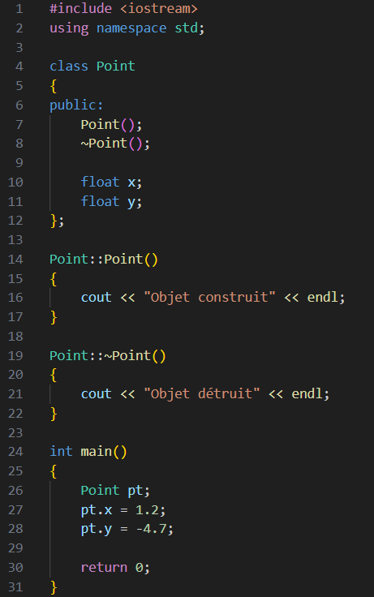

- Mots-clés : `class` et `public` (ne pas oublier les deux points !)
	- Tout ce qui est après `public:` est en public

</div></script></section><section  data-markdown><script type="text/template"><!-- .slide: class="drop" -->
<div class="" style="position: absolute; left: 0px; top: 0px; height: 700px; width: 960px; min-height: 700px; display: flex; flex-direction: column; align-items: center; justify-content: center" absolute="true">

## Exemple : une classe avec deux attributs (exécution)

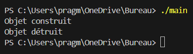

<div class="callout callout-color1">
<div class="callout-title">
<div class="callout-icon">
<i class="fas fa-info-circle" ></i>
</div>
<div class="callout-title-inner">
Attention
</div>
</div>
<div class="callout-content">
Ne pas oublier le point-virgule après l'accolade ET ne pas oublier l'opérateur résolution de portée :: pour accéder aux éléments d'une classe en-dehors de celle-ci
</div>
</div>


</div></script></section><section  data-markdown><script type="text/template"><!-- .slide: class="drop" -->
<div class="" style="position: absolute; left: 0px; top: 0px; height: 700px; width: 960px; min-height: 700px; display: flex; flex-direction: column; align-items: center; justify-content: center" absolute="true">

## À propos du constructeur et du destructeur

Il n'est pas nécessaire de préciser des instructions à exécuter

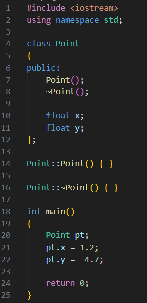

</div></script></section><section  data-markdown><script type="text/template"><!-- .slide: class="drop" -->
<div class="" style="position: absolute; left: 0px; top: 0px; height: 700px; width: 960px; min-height: 700px; display: flex; flex-direction: column; align-items: center; justify-content: center" absolute="true">

## Passer les attributs en privé

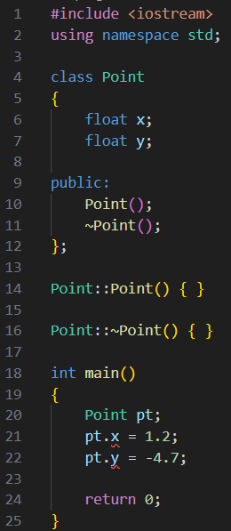

`x` et `y` sont désormais inaccessibles. Comment résoudre ce problème ?

<div class="callout callout-color1">
<div class="callout-title">
<div class="callout-icon">
<i class="fas fa-info-circle" ></i>
</div>
<div class="callout-title-inner">
Mot-clé `private`
</div>
</div>
<div class="callout-content">
Les éléments d'une classe sont par défaut en privé. Il n'est donc pas nécessaire de mettre le mot-clé au début de la classe
</div>
</div>

</div></script></section><section  data-markdown><script type="text/template"><!-- .slide: class="drop" -->
<div class="" style="position: absolute; left: 0px; top: 0px; height: 700px; width: 960px; min-height: 700px; display: flex; flex-direction: column; align-items: center; justify-content: center" absolute="true">

## L'encapsulation

- Manière de concevoir les classes d'un programme :
	- Privé : attributs
	- Public : méthodes pour accéder aux attributs
- Nécessite des ***getters*** et ***setters*** pour la majorité des attributs :
	- ***getters*** : pour obtenir (*get*) la valeur d'un attribut
	- ***setters*** : pour modifier (*set*) la valeur d'un attribut

- Construction purement arbitraire
- Utile pour augmenter la lisibilité du code et concevoir une bonne architecture

</div></script></section><section  data-markdown><script type="text/template"><!-- .slide: class="drop" -->
<div class="" style="position: absolute; left: 0px; top: 0px; height: 700px; width: 960px; min-height: 700px; display: flex; flex-direction: column; align-items: center; justify-content: center" absolute="true">

## Les *getters* et *setters*

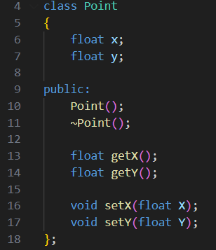
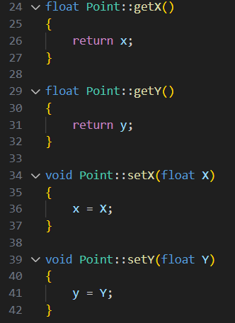

Les *setters* en *void* car la modification d'un attribut ne devrait rien renvoyer

</div></script></section><section  data-markdown><script type="text/template"><!-- .slide: class="drop" -->
<div class="" style="position: absolute; left: 0px; top: 0px; height: 700px; width: 960px; min-height: 700px; display: flex; flex-direction: column; align-items: center; justify-content: center" absolute="true">

## Utilisation dans le main

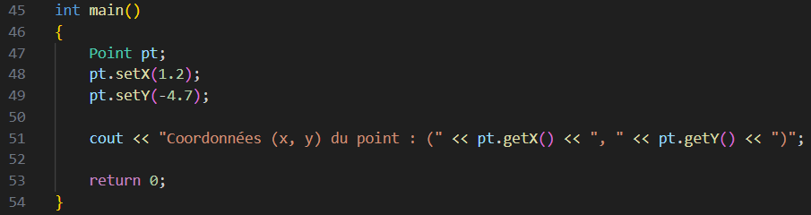
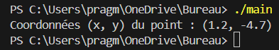

</div></script></section><section  data-markdown><script type="text/template"><!-- .slide: class="drop" -->
<div class="" style="position: absolute; left: 0px; top: 0px; height: 700px; width: 960px; min-height: 700px; display: flex; flex-direction: column; align-items: center; justify-content: center" absolute="true">

## Exercice

- Classe `Segment` qui encapsule deux objets de type `Point`
- Ajouter une méthode pour obtenir la longueur du segment (voir formule ci-dessous au besoin)


</div></script></section><section  data-markdown><script type="text/template"><!-- .slide: class="drop" -->
<div class="" style="position: absolute; left: 0px; top: 0px; height: 700px; width: 960px; min-height: 700px; display: flex; flex-direction: column; align-items: center; justify-content: center" absolute="true">

## Solution (1 / 2)

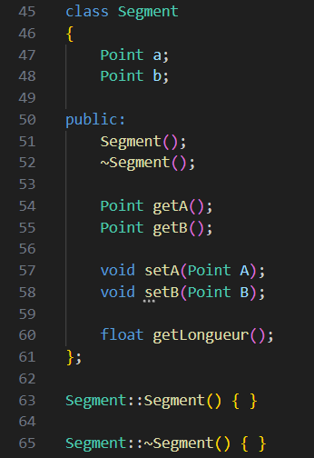

</div></script></section><section  data-markdown><script type="text/template"><!-- .slide: class="drop" -->
<div class="" style="position: absolute; left: 0px; top: 0px; height: 700px; width: 960px; min-height: 700px; display: flex; flex-direction: column; align-items: center; justify-content: center" absolute="true">

## Solution (2 / 2)

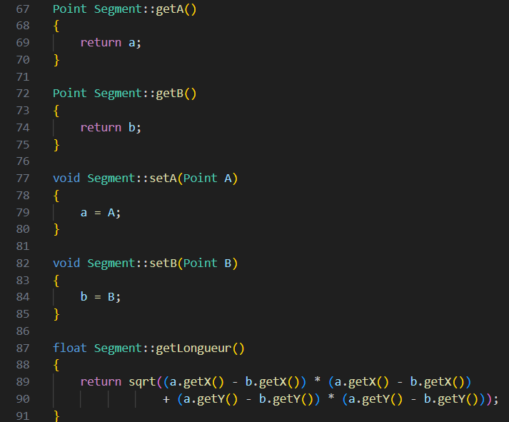


</div></script></section><section  data-markdown><script type="text/template"><!-- .slide: class="drop" -->
<div class="" style="position: absolute; left: 0px; top: 0px; height: 700px; width: 960px; min-height: 700px; display: flex; flex-direction: column; align-items: center; justify-content: center" absolute="true">

# Les fichiers .h et .cpp

</div></script></section><section  data-markdown><script type="text/template"><!-- .slide: class="drop" -->
<div class="" style="position: absolute; left: 0px; top: 0px; height: 700px; width: 960px; min-height: 700px; display: flex; flex-direction: column; align-items: center; justify-content: center" absolute="true">

## Les fichiers .h et .cpp

- &shy;<!-- .element: class="fragment" data-fragment-index="1" --> Scinder le code en plusieurs fichiers pour une meilleure architecture
- &shy;<!-- .element: class="fragment" data-fragment-index="2" --> Deux fichiers par classe
	- &shy;<!-- .element: class="fragment" data-fragment-index="3" --> Fichier d'**en-tête** / ***header*** .h : déclarations (classes, fonctions) et définitions des constantes
	- &shy;<!-- .element: class="fragment" data-fragment-index="4" --> Fichier **source** .cpp : définitions des fonctions et des méthodes des classes, fonction `main()`
- &shy;<!-- .element: class="fragment" data-fragment-index="5" --> Les fichiers d'en-tête peuvent être inclus dans des fichiers source ou d'autres fichiers d'en-tête
	- &shy;<!-- .element: class="fragment" data-fragment-index="6" --> Il faut utiliser l'instruction `#include "nomdufichier.h"` (attention aux guillemets !)

</div></script></section><section  data-markdown><script type="text/template"><!-- .slide: class="drop" -->
<div class="" style="position: absolute; left: 0px; top: 0px; height: 700px; width: 960px; min-height: 700px; display: flex; flex-direction: column; align-items: center; justify-content: center" absolute="true">

## Exemple

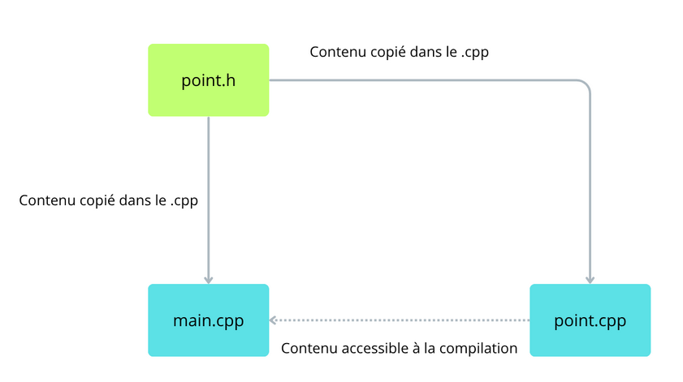

</div></script></section><section  data-markdown><script type="text/template"><!-- .slide: class="drop" -->
<div class="" style="position: absolute; left: 0px; top: 0px; height: 700px; width: 960px; min-height: 700px; display: flex; flex-direction: column; align-items: center; justify-content: center" absolute="true">

## Exercice : scinder le code de l'exercice sur la classe `Segment` en 5 fichiers

</div></script></section><section  data-markdown><script type="text/template"><!-- .slide: class="drop" -->
<div class="" style="position: absolute; left: 0px; top: 0px; height: 700px; width: 960px; min-height: 700px; display: flex; flex-direction: column; align-items: center; justify-content: center" absolute="true">

## Solution :

</div></script></section><section  data-markdown><script type="text/template"><!-- .slide: class="drop" -->
<div class="" style="position: absolute; left: 0px; top: 0px; height: 700px; width: 960px; min-height: 700px; display: flex; flex-direction: column; align-items: center; justify-content: center" absolute="true">

# Classes et pointeurs

</div></script></section><section  data-markdown><script type="text/template"><!-- .slide: class="drop" -->
<div class="" style="position: absolute; left: 0px; top: 0px; height: 700px; width: 960px; min-height: 700px; display: flex; flex-direction: column; align-items: center; justify-content: center" absolute="true">

## Classes et pointeurs

- &shy;<!-- .element: class="fragment" data-fragment-index="1" -->Pour appeler une méthode d'un **pointeur sur un objet**, il faut utiliser l'opérateur `->` et non `.`
- &shy;<!-- .element: class="fragment" data-fragment-index="2" -->Les attributs d'une classe peuvent être des pointeurs mais il faut allouer / désallouer la mémoire !
	- &shy;<!-- .element: class="fragment" data-fragment-index="3" -->Allocation : constructeur
	- &shy;<!-- .element: class="fragment" data-fragment-index="4" -->Désallocation : destructeur

</div></script></section><section  data-markdown><script type="text/template"><!-- .slide: class="drop" -->
<div class="" style="position: absolute; left: 0px; top: 0px; height: 700px; width: 960px; min-height: 700px; display: flex; flex-direction: column; align-items: center; justify-content: center" absolute="true">

## Exercice : modifier l'exercice précédent en mettant `a` et `b` en pointeur sur un `Point`

</div></script></section><section  data-markdown><script type="text/template"><!-- .slide: class="drop" -->
<div class="" style="position: absolute; left: 0px; top: 0px; height: 700px; width: 960px; min-height: 700px; display: flex; flex-direction: column; align-items: center; justify-content: center" absolute="true">

## Solution (1 / 2)

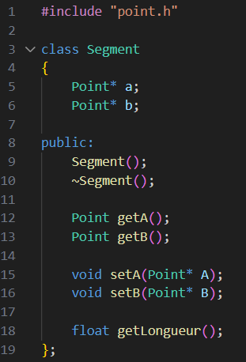

</div></script></section><section  data-markdown><script type="text/template"><!-- .slide: class="drop" -->
<div class="" style="position: absolute; left: 0px; top: 0px; height: 700px; width: 960px; min-height: 700px; display: flex; flex-direction: column; align-items: center; justify-content: center" absolute="true">

## Solution (2 / 2)

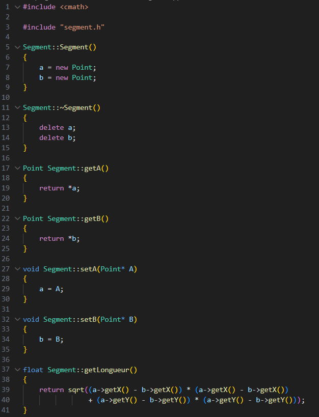

</div></script></section><section  data-markdown><script type="text/template"><!-- .slide: class="drop" -->
<div class="" style="position: absolute; left: 0px; top: 0px; height: 700px; width: 960px; min-height: 700px; display: flex; flex-direction: column; align-items: center; justify-content: center" absolute="true">

# Complément sur le constructeur et héritage

</div></script></section><section  data-markdown><script type="text/template"><!-- .slide: class="drop" -->
<div class="" style="position: absolute; left: 0px; top: 0px; height: 700px; width: 960px; min-height: 700px; display: flex; flex-direction: column; align-items: center; justify-content: center" absolute="true">

## Complément sur le constructeur

- &shy;<!-- .element: class="fragment" data-fragment-index="1" --> Le constructeur présenté jusqu'à maintenant est le constructeur **par défaut**
	- &shy;<!-- .element: class="fragment" data-fragment-index="2" --> Il n'est pas nécessaire d'inclure ce constructeur dans la déclaration de la classe (idem pour le destructeur)
- &shy;<!-- .element: class="fragment" data-fragment-index="3" --> Il est possible de définir un constructeur à paramètres
	- &shy;<!-- .element: class="fragment" data-fragment-index="4" --> Utile pour initialiser les attributs directement

</div></script></section><section  data-markdown><script type="text/template"><!-- .slide: class="drop" -->
<div class="" style="position: absolute; left: 0px; top: 0px; height: 700px; width: 960px; min-height: 700px; display: flex; flex-direction: column; align-items: center; justify-content: center" absolute="true">

## Exercice : ajouter un constructeur à paramètres à l'exercice précédent pour initialiser `a` et `b`

</div></script></section><section  data-markdown><script type="text/template"><!-- .slide: class="drop" -->
<div class="" style="position: absolute; left: 0px; top: 0px; height: 700px; width: 960px; min-height: 700px; display: flex; flex-direction: column; align-items: center; justify-content: center" absolute="true">

## Solution :

</div></script></section><section  data-markdown><script type="text/template"><!-- .slide: class="drop" -->
<div class="" style="position: absolute; left: 0px; top: 0px; height: 700px; width: 960px; min-height: 700px; display: flex; flex-direction: column; align-items: center; justify-content: center" absolute="true">

## Héritage

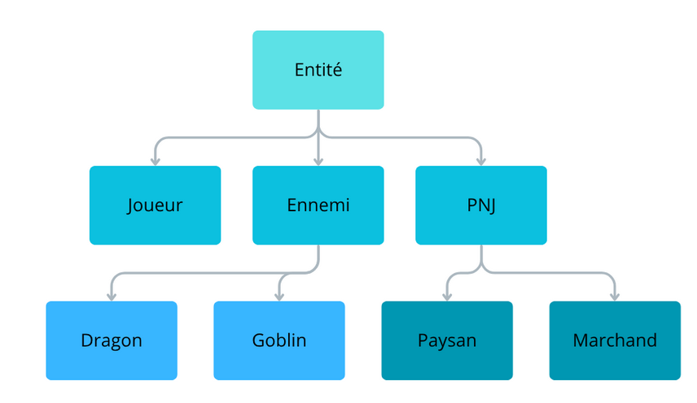

- &shy;<!-- .element: class="fragment" data-fragment-index="1" --> Donner plusieurs formes à un même objet
	- &shy;<!-- .element: class="fragment" data-fragment-index="2" --> Un objet de type `Dragon` est également de type `Ennemi` et de type `Entité` !
	- &shy;<!-- .element: class="fragment" data-fragment-index="3" --> Ordre d'appel des constructeurs : `Entité`, `Ennemi`, `Dragon`

</div></script></section><section  data-markdown><script type="text/template"><!-- .slide: class="drop" -->
<div class="" style="position: absolute; left: 0px; top: 0px; height: 700px; width: 960px; min-height: 700px; display: flex; flex-direction: column; align-items: center; justify-content: center" absolute="true">

</div></script></section>
</section></div>
    </div>

    <script src="../include/dist/reveal.js"></script>

    <script src="../include/plugin/markdown/markdown.js"></script>
    <script src="../include/plugin/highlight/highlight.js"></script>
    <script src="../include/plugin/zoom/zoom.js"></script>
    <script src="../include/plugin/notes/notes.js"></script>
    <script src="../include/plugin/math/math.js"></script>
	<script src="../include/plugin/mermaid/mermaid.js"></script>
	<script src="../include/plugin/chart/chart.min.js"></script>
	<script src="../include/plugin/chart/plugin.js"></script>
	<script src="../include/plugin/customcontrols/plugin.js"></script>
	<script src="../include/plugin/chalkboard/plugin.js"></script>

    <script>
		function myFunction() {
  // Get the text field
	var text = `#include <iostream>
using namespace std;

enum Action
{
    Avancer,
    Reculer,
    Rien
};

int main()
{
    float distance = -1;

    while (distance < 0)
    {
        cout << "Distance au mur : ";
        cin >> distance;
    }

    return 0;
}`;

	// Copy the text inside the text field
	navigator.clipboard.writeText(text);
} 

      function extend() {
        var target = {};
        for (var i = 0; i < arguments.length; i++) {
          var source = arguments[i];
          for (var key in source) {
            if (source.hasOwnProperty(key)) {
              target[key] = source[key];
            }
          }
        }
        return target;
      }

	  function isLight(color) {
		let hex = color.replace('#', '');

		// convert #fff => #ffffff
		if(hex.length == 3){
			hex = `${hex[0]}${hex[0]}${hex[1]}${hex[1]}${hex[2]}${hex[2]}`;
		}

		const c_r = parseInt(hex.substr(0, 2), 16);
		const c_g = parseInt(hex.substr(2, 2), 16);
		const c_b = parseInt(hex.substr(4, 2), 16);
		const brightness = ((c_r * 299) + (c_g * 587) + (c_b * 114)) / 1000;
		return brightness > 155;
	}

	var bgColor = getComputedStyle(document.documentElement).getPropertyValue('--r-background-color').trim();
	var isLight = isLight(bgColor);

	if(isLight){
		document.body.classList.add('has-light-background');
	} else {
		document.body.classList.add('has-dark-background');
	}

      // default options to init reveal.js
      var defaultOptions = {
        controls: true,
        progress: true,
        history: true,
        center: true,
        transition: 'default', // none/fade/slide/convex/concave/zoom
        plugins: [
          RevealMarkdown,
          RevealHighlight,
          RevealZoom,
          RevealNotes,
          RevealMath.MathJax3,
		  RevealMermaid,
		  RevealChart,
		  RevealCustomControls,
		  RevealChalkboard, 
        ],


    	allottedTime: 120 * 1000,

		mathjax3: {
			mathjax: '../include/plugin/math/mathjax/tex-mml-chtml.js',
		},
		markdown: {
		  gfm: true,
		  mangle: true,
		  pedantic: false,
		  smartLists: false,
		  smartypants: false,
		},

		mermaid: {
			theme: isLight ? 'default' : 'dark',
		},

		customcontrols: {
			controls: [
				{id: 'toggle-overview',
				title: 'Toggle overview (O)',
				icon: '<i class="fa fa-th"></i>',
				action: 'Reveal.toggleOverview();'
				},
				{ icon: '<i class="fa fa-pen-square"></i>',
				title: 'Toggle chalkboard (B)',
				action: 'RevealChalkboard.toggleChalkboard();'
				},
				{ icon: '<i class="fa fa-pen"></i>',
				title: 'Toggle notes canvas (C)',
				action: 'RevealChalkboard.toggleNotesCanvas();'
				},
				{ icon: '<i class="fa fa-home" onclick = "window.location.href = \'../index.html\';"></i>',
				title: 'Page d\'accueil',
				action: ''
				},
			]
		},
      };

      // options from URL query string
      var queryOptions = Reveal().getQueryHash() || {};

      var options = extend(defaultOptions, {"width":960,"height":700,"margin":0.04,"controls":true,"progress":true,"slideNumber":false,"transition":"slide","transitionSpeed":"normal"}, queryOptions);
    </script>

    <script>
      Reveal.initialize(options);
    </script>
  </body>

  <!-- created with Advanced Slides -->
</html>
